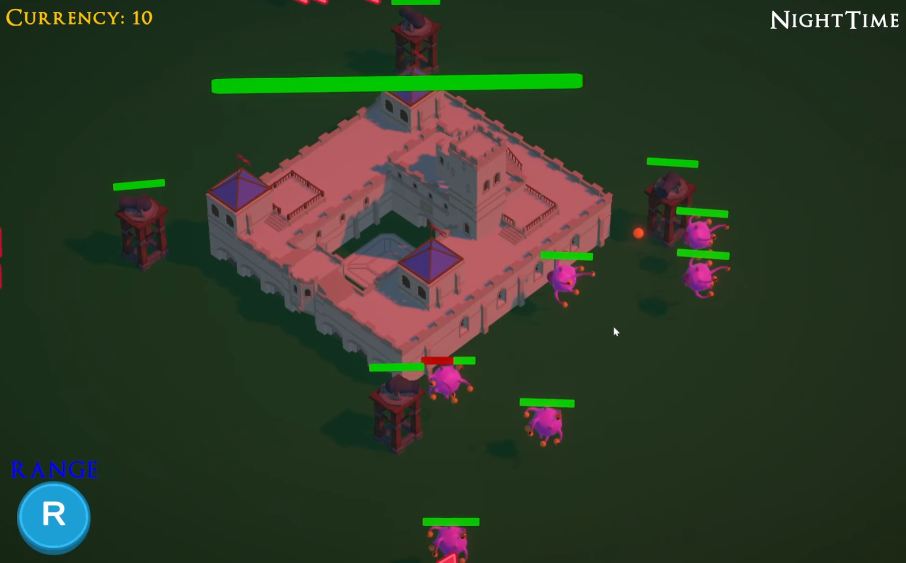

This game is a tower defense building game inspired by Clash Of Clans that is a solo project I made as my final year project for Nanyang Polytechnic.
The core mechanics of this game are the grid based building system, tower defense upgrading mechanics, enemy wave spawning, enemy pathfinding/AI, coin system for upgrading towers and building new towers, as well as the day and night cycle where the player can upgrade or build in the morning and watch waves of enemies attacking at night.